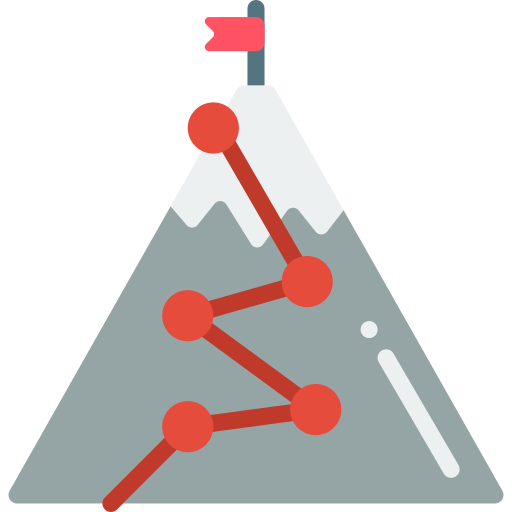
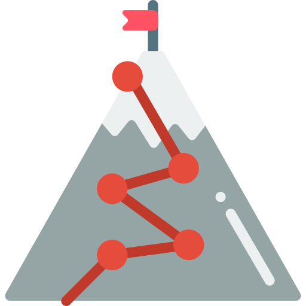
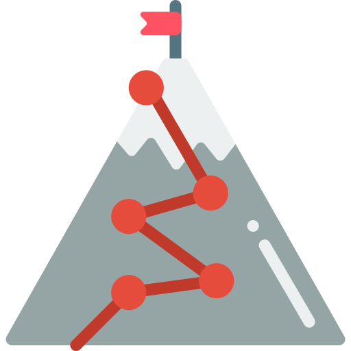
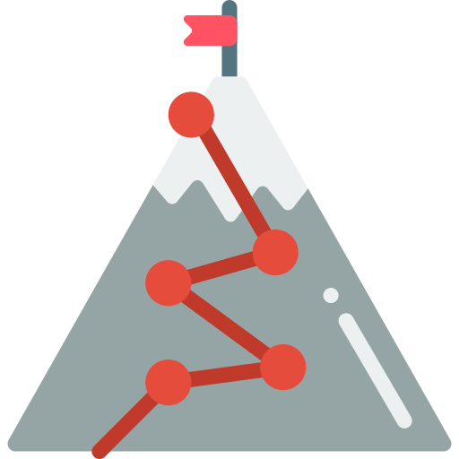

I'm Pankaj
a web designer
 



I have good knowledge of Data Structure & Algorithm and Front-end. Well-versed in numerous programming languages including Java,HTML5/CSS, JavaScript. Actively making Projects and also doing some Competitive Programming. I can speak English very well. Apart from this I am hard working and exited to work with your company.

Web developers create and maintain websites. They are also responsible for the site's technical aspects, such as its performance and capacity, which are measures of a website's speed and how much traffic the site can handle. In addition, web developers may create content for the site.

Coders are the construction workers of the digital world. Also known as computer programmers, developers, or software engineers, coders put together the building blocks to create websites, apps, or any other type of computer software.
Love Web design as much as I do? Let's talk about how awesome it is!
CONTACT ME